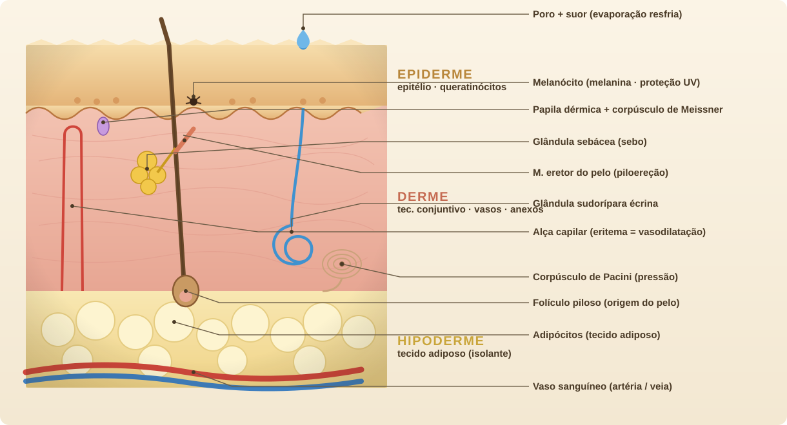
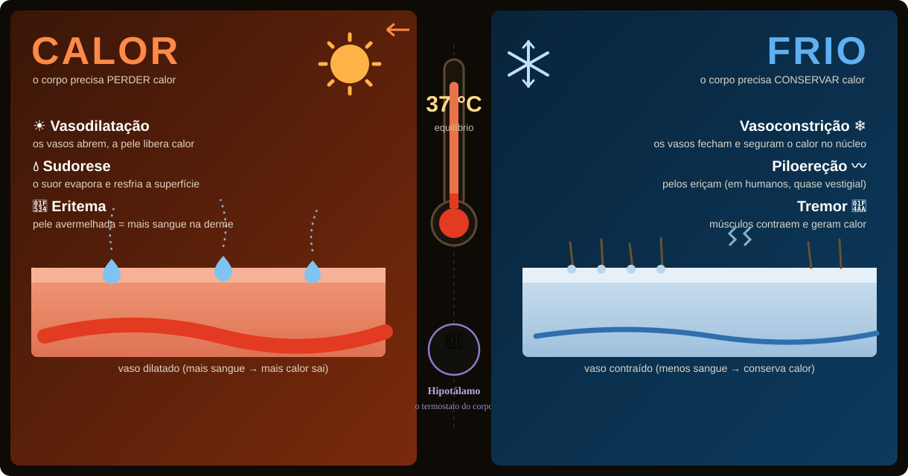
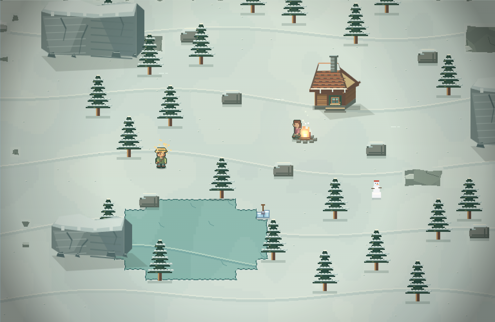
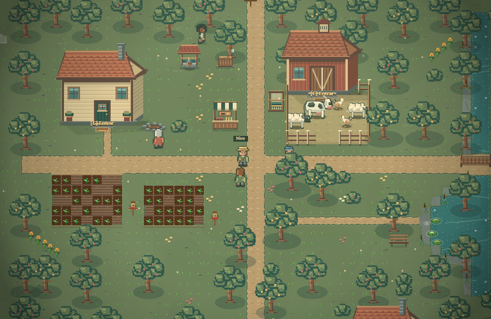
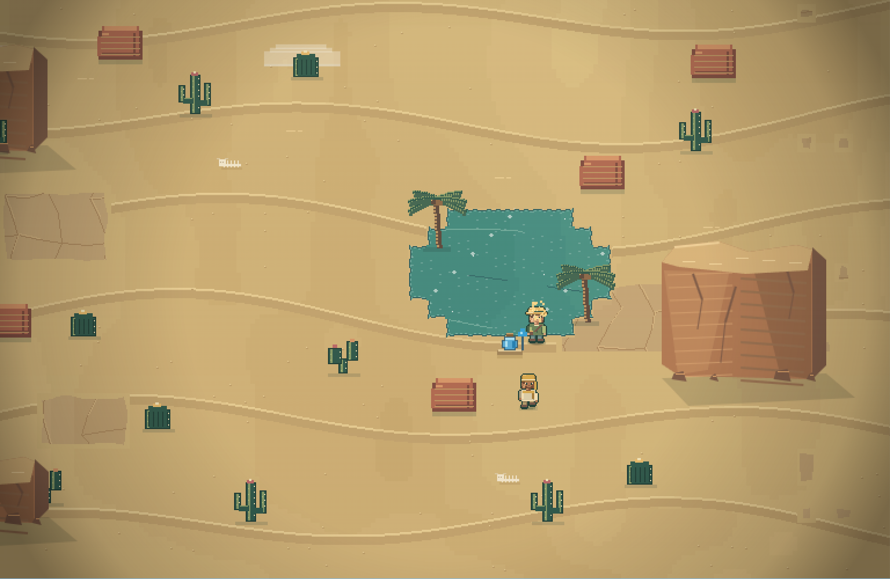
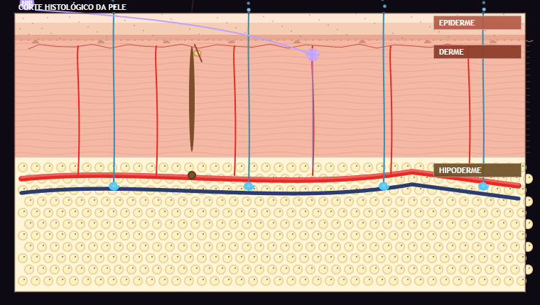

FAZENDA 37°C
Uma carta, seis moradores e três ventos. Ajude Rosa a reabrir a Casa das Sementes, cuide da terra e descubra a histologia no caminho.
O corpo é a
sua fazenda.
No calor você sua e vasodilata; no frio você treme e vasoconstringe. Cada decisão no jogo é um conceito real de termorregulação — e você não só lê a resposta certa, você sente na pele a consequência de cada escolha.
A histologia
acontece na tela
Abra a Visão da Pele e observe um corte histológico completo — não uma foto, um diagrama vivo. Cada estrutura da pele tem um papel térmico, e o jogo mostra qual delas está agindo em cada momento.
- Epiderme — barreira de queratinócitos; abriga melanócitos (melanina/UV) e a renovação celular.
- Derme — vasos que dilatam ou contraem, glândulas sudoríparas, folículos pilosos e receptores.
- Hipoderme — tecido adiposo que isola o corpo contra a perda de calor.

Um termostato
chamado 37 °C
O hipotálamo compara a temperatura do corpo com a referência de 37 °C e aciona respostas opostas conforme o ambiente. O jogo transforma esse equilíbrio em regra de sobrevivência.
- No calor — vasodilatação, sudorese e eritema para perder calor.
- No frio — vasoconstrição, piloereção e tremor para conservar calor.
- Hidratação, esforço, sombra, casaco e fogueira entram no mesmo balanço térmico.

Aprender sem
parar de jogar
A histologia não aparece como um questionário à parte: ela é a própria mecânica do jogo.
Mecânica = conteúdo
Suar, vasodilatar, tremer, hidratar — cada ação do jogo é um conceito de fisiologia acontecendo de verdade.
Missões no contexto
As perguntas nascem de um evento vivido: o golpe de calor na descida ao deserto, o arrepio subindo a montanha.
Dois níveis
Modo adaptável para o Ensino Fundamental e para o Médio — a profundidade das missões acompanha a turma.
Painel do professor
Acerto por eixo de conteúdo e por nível, ranking e exportação em CSV. O modo de turma exige backend e privacidade configurados; o relatório local funciona offline.
Um mundo só,
do gelo ao deserto
Não são fases separadas: montanha, fazenda e deserto são um mapa contínuo. Você caminha entre eles sem nenhuma tela de carregamento — e a temperatura do corpo muda gradualmente, passo a passo, em vez de saltar num corte de cena.




43 missões, 5 eixos
Todo o conteúdo é categorizado — o painel mostra em qual eixo a turma acerta mais e erra mais.
Escolha o seu lado
Como você vai usar a Fazenda 37 °C?
Sou Aluno
Conheça Rosa, Lia, Tomás, Inês, Caio e Nico. Converse, cultive amizades e reabra a Casa das Sementes enquanto aprende sobre a pele. O código de turma é opcional.
▶ Jogar agora 👩🏫Sou Professor
Com o backend configurado, acompanhe acertos por eixo de conteúdo e por nível, ranking e conceitos com mais erros, com exportação em CSV. Revise a configuração de privacidade antes de usar dados de alunos. Para a apresentação offline, consulte Progresso e relatório dentro do jogo.
Abrir painel →